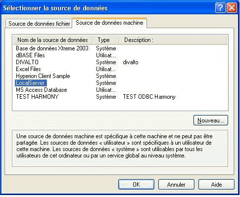
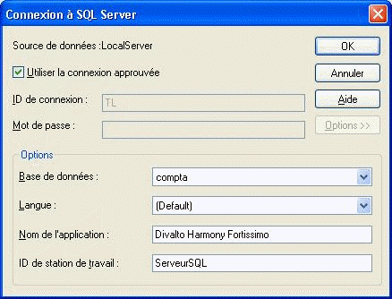

La plupart des actions réalisées par XPSQL nécessitent une connexion avec le serveur SQL.
XLANSQL utilise l'interface standard ODBC pour l'accès à la base SQL, notamment pour la connexion à la base. Pour chaque session, XLANSQL utilise le code de l'utilisateur HARMONY et son mot de passe du fichier XLOG.dhfi du serveur. L'utilitaire XPSQL permet de simuler la connexion à la base SQL. Il stocke une chaîne de caractères génériques contenant les informations pour la connexion à la base SQL dans le fichier paramètre FHSQL.
Lors de la première connexion au serveur, XPSQL ouvre la boîte de dialogue permettant de choisir la source de données. On choisira la source correspondante à la base dans l'onglet " Source de données machine ".

Le choix " Je veux me connecter en appelant la boîte de dialogue SQL pour changer de source " permet de changer la source de données en cas d'erreur.
Rappel
La source de données doit être configurée au préalable. Voir Configuration de la source ODBC.
Attention pour SQL Server,
Lorsque l’on gère plusieurs bases, on vérifiera que la chaîne de connexion correspond bien à la base choisie.

Pour la gestion d'une base DB2 sur un serveur i, il y a en fait deux chaînes de connexion différentes :
La chaîne de connexion ODBC (comme décrite ci-dessus), utilisée par l'utilitaire XPSQL pour la création des tables.
La chaîne de connexion CLI, utilisée par le travail XLAN sur le serveur i. En effet, le travail XLAN qui s'exécute sur le serveur, n'utilise pas l'interface ODBC pour dialoguer avec la base DB2, mais l'interface CLI propre au système i. On trouvera donc dans la boîte de dialogue des paramètres de la base, les deux chaînes de connexion.
Voir aussi : Option de connexion Mars.